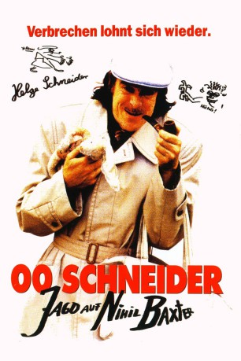

#11875 00 Schneider - Jagd auf Nihil Baxter
 
 IMDB-Wertung: 7.1 / 10
IMDB-Wertung: 7.1 / 10  Metascore: 0
Metascore: 0 
Der Zirkusclown Metulski hat dem Kunstsammler und Freak Nihil Baxter sein Auto verkauft. Als Baxter bemerkt, das dieser ihn mit dem Auto übers Ohr gehauen hat, erschlägt er Metulski mit einer Statue. Kommissar 00 Schneider und sein Kollege Körschgen ermitteln in dem Mordfall und kommen schon bald dem exzentrischen Nihil Baxter auf die Schliche...
Jahr: 1994
Dauer: 88 Minuten
FSK: 0
Land: Deutschland Studio: Senator FilmTonspuren:
Untertitel:
Auflösung: 1080p (1920x1080) Größe: 5447 MB
Genre: Komödie
Regisseur:  Helge Schneider
Helge Schneider
Drehbuch: Helge Schneider, Brötchen
Soundtrack: Helge Schneider
Darsteller:
- Werner Nekes als Mann in Schwimmsachen
- Helge Schneider als 00 Schneider / Nihil Baxter / Prof. Dr. Hasenbein / Johnny Flash
- Helmut Körschgen als Körschgen
- Andreas Kunze als Frau 00 Schneider
- Werner Abrolat als Polizeipräsident
- Bratislav Metulskie als Metulskie
- Guenther Kordas als Zirkusdirektor
- Hotte Reichlich als Shorty Robinson
- Charlie Weiss als Pilot
- Thomas Busch als Sekretärin 00 Schneider
- Otto Van den Berg als Metulskies Vater
- Peter Thoms als Beschissener TV Unterhalter
- Schringo van den Berg als Hausmeister mit Wadenkrämpfen
- Tim Janßen als Kleiner Junge
- Buddy Casino als Zirkusmusiker
- Hanno Huth als Mann mit Gipsbein
- Sergej Gleitmann als Urmensch
- Eva Kurowski als TV Girl
- Emelie Feld als Nachbarin
- Hans-Peter Hell als Regisseur Talkshow
- Robert Wolf als Polizist mit Blumentopf
- Ingrid Urban als Krankenschwester
- Rolf Grüter als Polizist Gefängnis
- Roman Maatz als Begleitpolizist Polizeipräsident
- Carlo Maatz als Begleitpolizist Polizeipräsident
- Klaus Herrmann als Untersuchungsrichter
- Phil Friederichs als Police Man at Party (uncredited)
Datei: X:\1994\00 Schneider - Jagd auf Nihil Baxter (1994, FSK0, 1920x1080).mkv seit 02.10.2019
Festplatte: Gemischt-01+Anime
 Es gibt insgesamt 67 Filme in der Gruppe '1994'
Es gibt insgesamt 67 Filme in der Gruppe '1994'